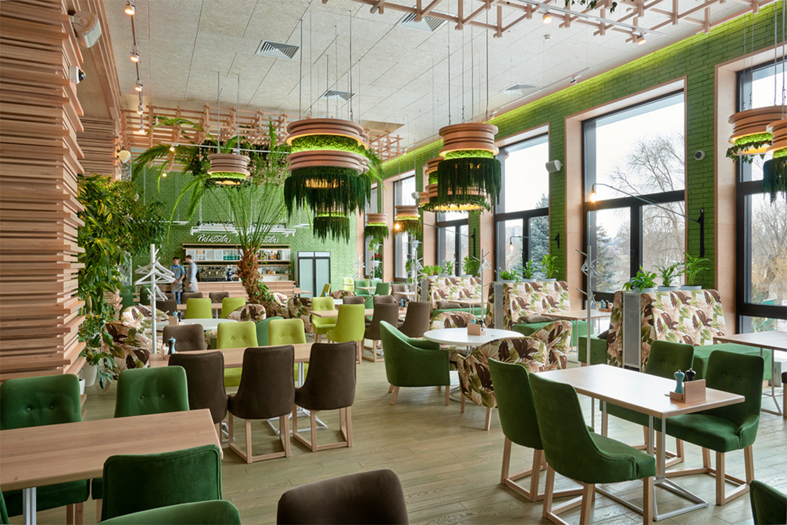

Bazilik |
Ресторан італійської кухні | |
|
Про нас "Bazilik" — це італійський ресторан, що поєднує вишукану атмосферу, сучасний інтер'єр та справжні кулінарні шедеври. Ми пропонуємо вам неповторний досвід італійської кухні, створений з любов'ю до традицій. |
 | |
|
Наше меню Насолоджуйтесь різноманітністю страв: від класичних піц і паст до авторських десертів та вишуканих вин. Кожен інгредієнт ретельно підібраний, щоб дарувати вам справжнє задоволення від смаку. |
||
Bazilik |
Забронюйте стіл |
|